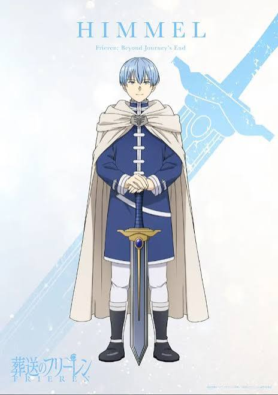
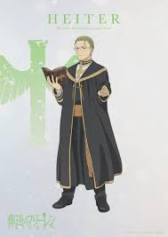
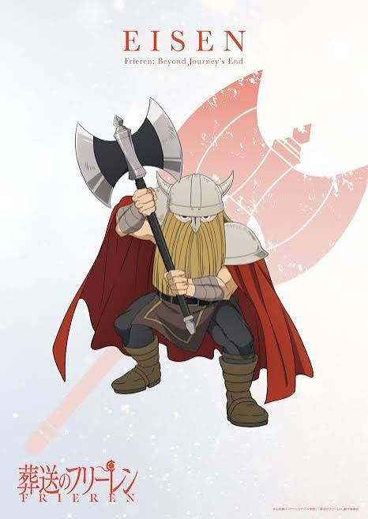
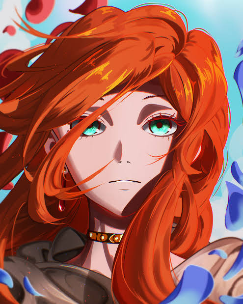

✧ Former Hero Party ✧
Meet the legendary companions who traveled with Frieren.
Discover their stories, abilities, and lasting legacies.
── ✦ ── ✧ ── ✦ ──
Choose a Party
✧ CURRENT JOURNEY PARTY ✧
✧ FORMER HERO PARTY ✧
✧ Himmel ✧

Himmel (ヒンメル)
| Class: | Hero (Sword Fighter) |
| Race: | Human |
| Status: | Deceased Legend |
Himmel was the kind and brave leader of the Hero's Party.
He traveled with Frieren, Heiter, and Eisen on a ten-year
adventure to defeat the Demon King.
His kindness and their shared memories continued to
influence Frieren long after their journey ended.
✦ Legacy and Treasures ✦
- The legendary Hero's Sword.
- The mirror-lotus ring he gave Frieren.
- His kindness toward the people he met.
✧ Heiter ✧

Heiter (ハイター)
| Class: | Priest |
| Race: | Human |
| Status: | Deceased Priest |
Heiter was a cheerful and dependable priest in the
Hero's Party. Although he enjoyed drinking alcohol,
he was also caring, intelligent, and wise.
Later in life, he cared for Fern and helped arrange
for Frieren to become her teacher.
✦ Holy Magic and Abilities ✦
- Healing and recovery magic.
- Protective holy magic against dangerous attacks.
- Resistance to curses and harmful magic.
✧ Eisen ✧

Eisen (アイゼン)
| Class: | Warrior |
| Race: | Dwarf |
| Status: | Retired Warrior |
Eisen was the powerful dwarf warrior of the Hero's Party.
He was known for his exceptional strength, endurance,
and ability to survive dangerous battles.
After the adventure, he trained Stark and helped
him develop into a capable warrior.
✦ Combat Traits ✦
- Exceptional physical strength.
- Remarkable endurance and toughness.
- Skilled use of heavy weapons.
✧ Flamme ✧

Flamme (フランメ)
| Class: | Legendary Mage |
| Race: | Human |
| Status: | Historical Figure |
Flamme was a legendary human mage who lived long
before Frieren's journey. She became Frieren's teacher
and passed down important magical knowledge.
She taught Frieren to suppress her mana to hide
her true magical power from her opponents.
✦ Magical Legacy ✦
- Teaching Frieren to conceal her mana.
- Passing down important magical knowledge.
- Leaving a lasting influence on Frieren.